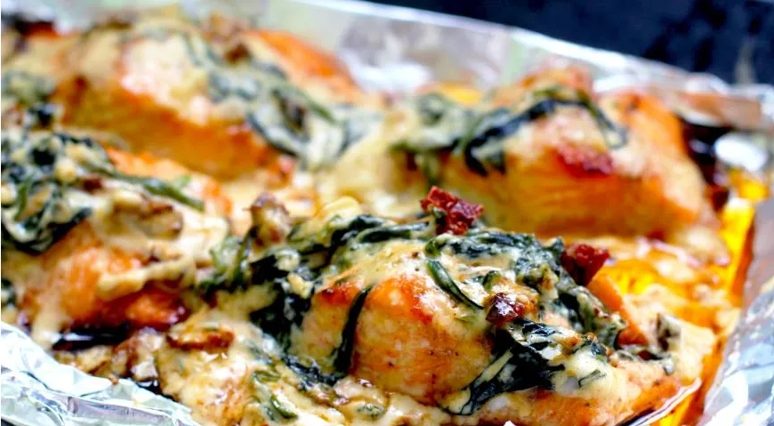

приготовление:
-
Разогреть сковороду с небольшим количеством масла. 500 гр. лосося посолить, поперчить и обжарить с двух сторон до полуготовности. Переложить на тарелку и оставить остывать.
-
На этой же сковороде обжарить мелко нарезанную 0,5 луковицы до прозрачности. Добавить порезанные 80гр. вяленых томатов и готовить пару минут. Затем добавить 60гр. шпината, перемешать и готовить ещё 1–2 минуты.
-
Влить 150 мл. сливок 20%, посолить, довести до кипения и убавить огонь.
-
Тем временем разделить обжаренный лосось на кусочки толщиной около 3 см. Переложить рыбу в соус, аккуратно перемешать и готовить под крышкой на маленьком огне около 10 минут до готовности.